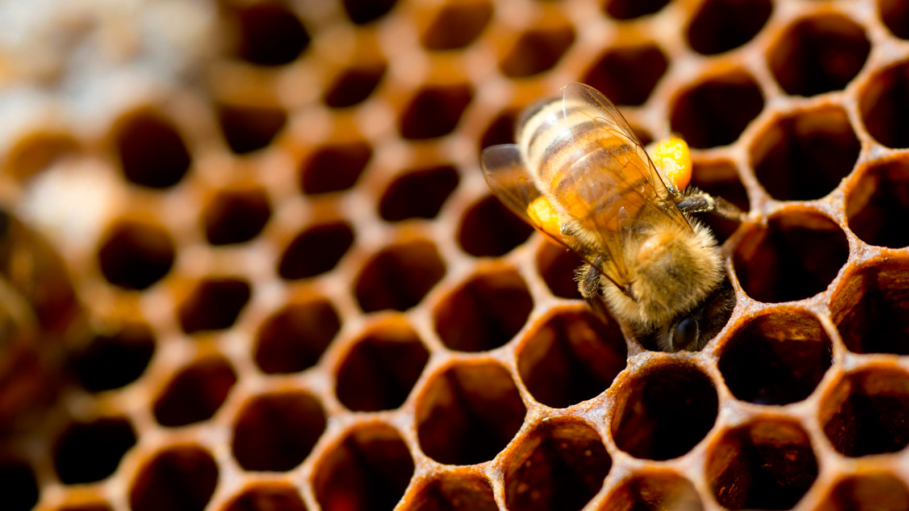

De korf
Bijen kunnen zelf een korf maken van bijenwas. Hiervan maken ze
honingraten aan bomen of muren. Helemaal bovenin de korf bewaren de
bijen de honing, vlak hieronder bewaren ze stuifmeel. Onder het
stuifmeel worden de larven grootgebracht. Die krijgen veel stuifmeel te
eten. Helemaal onderin is een open stuk waardoor er frisse lucht naar
binnen kan komen en de bijen in- en uit kunnen vliegen.
